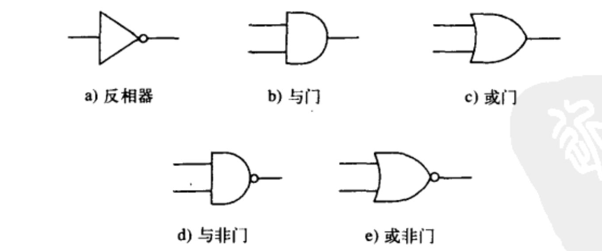

数字逻辑
数字逻辑
1、组合逻辑

基本的逻辑门为与、或、非等，我们可以使用这些基本的逻辑门电路构建逻辑结构，这些逻辑结构就是构成计算机微结构的基本结构单元。
逻辑结构分为两大类，一类是可以存储信息的，另一类是不能存储信息的。这些不能存储信息的结构有时被称作决策单元（decision element）。通常它们又被称作“组合逻辑结构（combinational logic structure）”，这是因为它们的输出状态完全取决于“当前”逻辑结构的输入。换句话话说就是，逻辑结构的输出状态，不依赖于任何历史信息（比如记忆在结构题内部的），因为这类逻辑结构根本不具备“记忆”信息的能力。
这里主要介绍3个组合逻辑结构：译码器（decoder）、多路复用起（mux）和全加器（full adder）。
1.1 译码器
译码器的特点：在所有输出中，仅有一个为1，其余皆为0。每个输出端口中对应一种输入模式。因而该结构可用于检查、匹配不同的输入模式。通常，若译码器有n个输入，则有2^n个输出。下图为译码器两个输入A和B的输出示例。
译码器主要用于解释一个二进制数，例如，两位的二进制可以表示4个数，分别为00，01， 10， 11，观察上图，刚好他们的输出都为1，这里并不是这么巧，而是设计之初就是为了实现这个结果而设计了这种电路。
-------------本文结束感谢您的阅读-------------